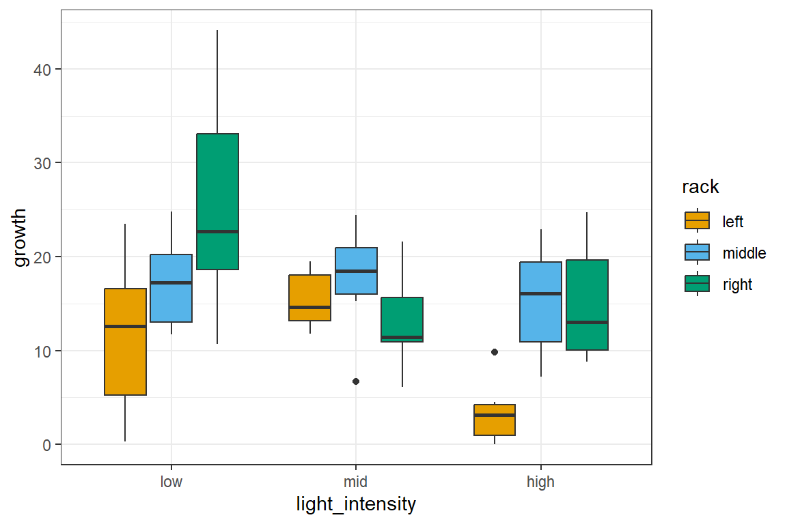
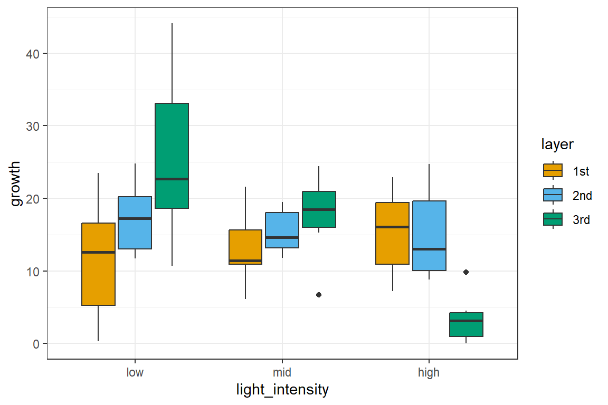
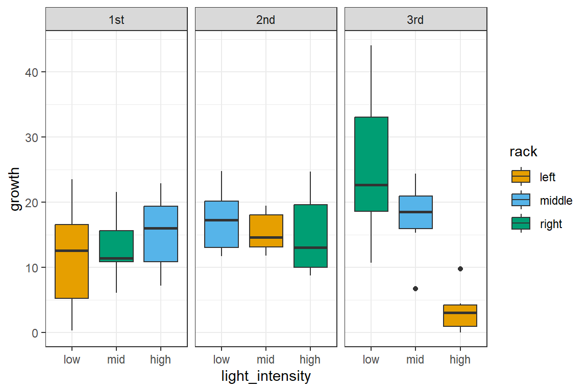
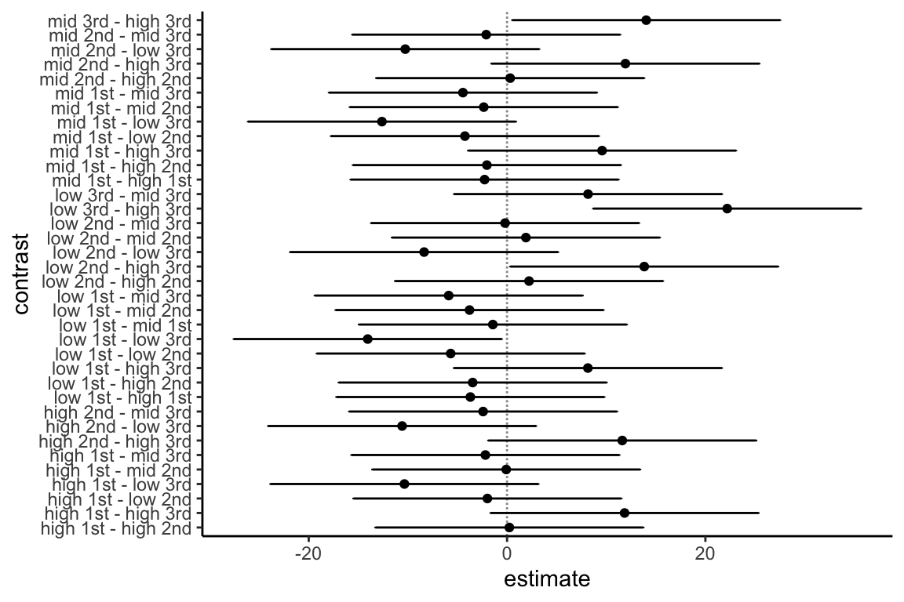
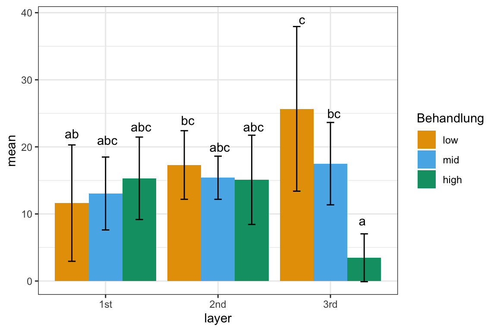

pacman::p_load(tidyverse, magrittr, see, readxl, knitr,
modelsummary, parameters, multcomp,
multcompView, emmeans,
conflicted)
## resolve some conflicts with same function naming
conflict_prefer("select", "dplyr")3 Auswertung zweifaktorielle ANOVA mit Interaktion
Version vom March 16, 2023 um 09:09:50
Wir wollen folgende R Pakete in diesem Kapitel nutzen.
Hier kommt jetzt ein schönes Beispiel für eine Auswertung von einem dreifaktoriellen Design mit einer ANOVA. Passenderweise haben wir auch einen Interaktionsterm vorliegen. Unser dreifaktoriellen Design ist auch kein echtes dreifaktorielles Design. Wir müssen uns hier entscheiden, welcher der zwei Blockfaktoren nun unsere Wiederholung sein soll. Aber schreiben wir erstmal unser Modell auf, bevor wir das Modell mit Inhalt füllen.
\[ y \sim f_1 + b_1 + b_2 \]
In unserem Beispiel schauen wir uns das Pflanzenwachstum growth in einer Klimakammer mit verschiedenen Belichtungsstufen light_intensity sowie der Position der Pflanze in der Lichtkammer. Die Pflanze hat eine Position im rack und dann im layer. So ergibt sich dann für uns folgendes ausgeschriebenes Modell.
\[ growth \sim light\_intensity + layer + rack \]
In dieser Form wird unser Modell aber leider nicht funktionieren. Wir hätten dann keine Wiederholungen mehr. Jede Pflanze würe dann exakt durch eine Faktorkombination beschrieben. Wir sehen gleich das Problem visualisiert. Vorher müssen wir uns aber einmal die Daten einlesen und eine Menge Faktoren erschaffen. Achtung, das Erschaffen der Faktoren ist hier sehr wichtig! Im Orginaldatensatz stehen nur Zahlen für die Faktoren. Wir kriegen dann ein echtes Problem.
light_tbl <- read_excel("data/light_intensity_data.xlsx") %>%
mutate(rack = factor(rack, labels = c("left", "middle", "right")),
layer = factor(layer, labels = c("1st", "2nd", "3rd")),
light_intensity = factor(light_intensity, labels = c("low", "mid", "high")),
growth = as.numeric(growth))In der Tabelle 3.1 sehen wir nochmal einen Ausschnitt aus den Daten.
| rack | layer | light_intensity | growth |
|---|---|---|---|
| left | 1st | low | 17.1 |
| left | 1st | low | 14.9 |
| left | 1st | low | 10.3 |
| left | 1st | low | 23.5 |
| left | 1st | low | 0.3 |
| left | 1st | low | 3.6 |
| … | … | … | … |
| right | 3rd | low | 19.5 |
| right | 3rd | low | 25.9 |
| right | 3rd | low | 35.5 |
| right | 3rd | low | 44.1 |
| right | 3rd | low | 10.7 |
| right | 3rd | low | 18.3 |
Nachdem wir die Daten eingelesen haben, schauen wir uns den Sachverhalt einmal für die drei Faktoren über die Level der einzelnen Faktoren an. Wir nutzen dafür die Funktion datasummary_crosstab() aus dem R Paket modelsummary. Wir können uns hier die Anzahl der Beobachtungen je Faktorlevelkombination einmal anschauen.
datasummary_crosstab(light_intensity ~ layer * rack, data = light_tbl,
statistic = NULL)| light_intensity | left | middle | right | left | middle | right | left | middle | right |
|---|---|---|---|---|---|---|---|---|---|
| low | 6 | 0 | 0 | 0 | 6 | 0 | 0 | 0 | 6 |
| mid | 0 | 0 | 6 | 6 | 0 | 0 | 0 | 6 | 0 |
| high | 0 | 6 | 0 | 0 | 0 | 6 | 6 | 0 | 0 |
Wir sehen eine Menge Nullen. Das heißt, dass diese Faktorlevelkombinationen keine Beobachtungen haben. Dann können wir auch über diese Kombinationen keine Aussage treffen. Wenn wir entweder rack oder layer entfernen, sieht die Sache schon besser aus. Wir haben jetzt alle Faktorlevelkombinationen belegt. Wir müssen uns dann nur noch entscheiden, welchen Faktor wir ins Modell nehmen wollen.
datasummary_crosstab(light_intensity ~ layer, data = light_tbl,
statistic = NULL)
datasummary_crosstab(light_intensity ~ rack, data = light_tbl,
statistic = NULL)| light_intensity | 1st | 2nd | 3rd |
|---|---|---|---|
| low | 6 | 6 | 6 |
| mid | 6 | 6 | 6 |
| high | 6 | 6 | 6 |
| light_intensity | left | middle | right |
|---|---|---|---|
| low | 6 | 6 | 6 |
| mid | 6 | 6 | 6 |
| high | 6 | 6 | 6 |
Das R Paket modelsummary bietet hier eine sehr große Auswahl an tollen Funktionen an um seine Daten übersichtlich zu gestalten.
Für die Entscheidung welcher der beiden Faktoren rack oder layer mit ins Modekll soll, schauen wir uns einmal die Boxplots für die jeweiligen Fakoten an. In Abbildung 3.1 sehen wir einmal die Boxplots aufgeteilt nach rack.
ggplot(light_tbl, aes(light_intensity, growth, fill = rack)) +
theme_bw() +
geom_boxplot() +
scale_fill_okabeito()
rack.Und wir sehen schon, da stimmt was nicht. Die Annahme der ANOVA ist, dass sich der Trend im ersten Faktorlevel für alle im Faktor über die anderen Faktoren gleicht. Das liest sich kryptisch, aber verdeutlichen wir es mal. Im Level low steigen alle Level des Faktors rack an. Wenn keine Interaktion vorliegen würde, dann müssten dieses Muster in dem Level mid und high ebenfalls annährend zu beobachten sein. Tut es aber nicht. Wir haben eine Interaktion zwischen light_intensity und rack visuell bestätigt.
ggplot(light_tbl, aes(light_intensity, growth, fill = layer)) +
theme_bw() +
geom_boxplot() +
scale_fill_okabeito()
layer.Dieses wirre Muster sehen wir dann auch in Abbildung 3.2. Hier passen die Trends des Faktors layer über die Faktorlevel low, mid und high auch wieder nicht. Schauen wir uns jetzt nochmal die ganze Sache aufgeteilt nach rack und layer an. Vielelicht werden wir dann etwas schlauer oder das Problem wird noch klarer.
ggplot(light_tbl, aes(light_intensity, growth, fill = rack)) +
theme_bw() +
geom_boxplot() +
facet_wrap(~ layer) +
scale_fill_okabeito()
rack und layer.Jetzt sehen wir etwas mehr. Im 1st Level liegen alle rack-Level auf einer Ebene. Ebenso liegen alle rack-Level auf einer Ebene im 2n Level. Das ganze Problem der Interaktion entsteht im 3rd Level. Hier ging etwas drunter und drüber im Pflanzenwachstum. Wir wissen jetzt, dass das dritte Layer anscheinend defekt war oder irgendwas dort mit den Racks nicht gestimmt hat.
Wir könnten jetzt das dritte Layer aus der Analyse werfen. Das wäre aber nur eine Möglichkeit. Wenn wir das tuen würden, dann würde wir auch die Interaktion los werden. Das wollen wir hier aber nicht, wir ziehen jetzt die Analyse einmal mit der Interaktion durch. Dafür bauen wir uns jetzt das lineare Modell und schauen uns einmal die ANOVA an.
fit_1 <- lm(growth ~ light_intensity + layer + light_intensity:layer,
data = light_tbl)
fit_1 %>% model_parameters()Parameter | Coefficient | SE | 95% CI | t(45) | p
---------------------------------------------------------------------------------------------
(Intercept) | 11.62 | 2.80 | [ 5.97, 17.26] | 4.14 | < .001
light intensity [mid] | 1.43 | 3.96 | [ -6.55, 9.42] | 0.36 | 0.719
light intensity [high] | 3.70 | 3.96 | [ -4.28, 11.68] | 0.93 | 0.356
layer [2nd] | 5.68 | 3.96 | [ -2.30, 13.67] | 1.43 | 0.159
layer [3rd] | 14.05 | 3.96 | [ 6.07, 22.03] | 3.54 | < .001
light intensity [mid] × layer [2nd] | -3.33 | 5.61 | [-14.62, 7.96] | -0.59 | 0.555
light intensity [high] × layer [2nd] | -5.92 | 5.61 | [-17.21, 5.37] | -1.06 | 0.297
light intensity [mid] × layer [3rd] | -9.60 | 5.61 | [-20.89, 1.69] | -1.71 | 0.094
light intensity [high] × layer [3rd] | -25.90 | 5.61 | [-37.19, -14.61] | -4.62 | < .001Erstmal sehen wir an den Modellparameters, dass hier wieder etwas nicht stimmt. Wir würden erwarten, dass der Effekt des Layers immer gleich ist. Hier ist der Effekt von dem 2nd Layer zu dem 3rd Layer fast dreimal so stark. Und eigentlich sollten die Layer den gleichen Effekt haben. Nämlich eigentlich keinen oder einen Effekt weit unter dem von der Lichtintensität. Das Layer ist eine technische Komponente.
fit_1 %>% anova() %>% model_parameters()Parameter | Sum_Squares | df | Mean_Square | F | p
----------------------------------------------------------------------
light_intensity | 433.15 | 2 | 216.57 | 4.60 | 0.015
layer | 70.92 | 2 | 35.46 | 0.75 | 0.477
light_intensity:layer | 1138.80 | 4 | 284.70 | 6.04 | < .001
Residuals | 2120.85 | 45 | 47.13 | |
Anova Table (Type 1 tests)Wir sehen die visuelle Interaktion auch in der ANOVA Ausgabe als hoch signifikanten Term light_intensity:layer mit dem \(p\)-Wert \(<0.001\). Im Anschluss rechnen wir jetzt die paarweisen Vergleiche mit der Funktion emmeans(). Mit dem | geben wir an, dass wir die paarweisen Vergleiche für die Level von light_intensity getrennt für die Level vom layer rechnen wollen. Wenn du keine Adjustierung des \(\alpha\)-Niveaus für die multiplen Vergleiche möchtest, dann wähle einfach die Option adjust = "none". Wir nutzen dann die Ausgabe nicht direkt sondern werden noch die Ausgabe etwas aufhübschen.
comp_1_obj <- fit_1 %>%
emmeans(specs = ~ light_intensity | layer) %>%
contrast(method = "pairwise", adjust = "bonferroni") In dem Objekt comp_1_obj sind eine Menge Informationen enthalten. Ich kürze mir immer die Informationen und sortiere nochmal die Ergebnisse. Wir erhalten dann eine saubere Wiedergabe.
comp_1_obj %>%
summary %>%
as_tibble %>%
select(contrast, layer, p.value) %>%
mutate(p.value = format.pval(p.value, eps = 0.001, digits = 2))# A tibble: 9 × 3
contrast layer p.value
<fct> <fct> <chr>
1 low - mid 1st 1.0000
2 low - high 1st 1.0000
3 mid - high 1st 1.0000
4 low - mid 2nd 1.0000
5 low - high 2nd 1.0000
6 mid - high 2nd 1.0000
7 low - mid 3rd 0.1355
8 low - high 3rd <0.001
9 mid - high 3rd 0.0028 Nach der Adjustierung für die multiplen Vergleiche haben wir nur noch einen Effekt in dem 3rd Layer. Sonst haben die Lichtintensitäten keinen Einfluss auf die Wuchshöhe der Pflanzen. Da wir wissen, dass das 3rd Layer auch das defekte Layer war, sehen wir hier schon, dass wir keinen wirklichen Effekt durch das Licht vorliegen haben. Alles was wir gefunden haben, ist eben ein defektes 3rd Layer.
Die 95% Konfidenzintervalle erhalten wir mit der Funktion confint(). Die Ergebnisse sind natürlich die gleichen. Wir sehen wieder keinen Unterschied zwischen den Lichtintensitäten außer in dem 3rd Layer.
ci_obj <- comp_1_obj %>%
confint() %>%
as_tibble() %>%
select(contrast, layer, estimate, conf.low = lower.CL, conf.high = upper.CL)
ci_obj# A tibble: 9 × 5
contrast layer estimate conf.low conf.high
<fct> <fct> <dbl> <dbl> <dbl>
1 low - mid 1st -1.43 -11.3 8.42
2 low - high 1st -3.70 -13.6 6.16
3 mid - high 1st -2.27 -12.1 7.59
4 low - mid 2nd 1.90 -7.96 11.8
5 low - high 2nd 2.22 -7.64 12.1
6 mid - high 2nd 0.317 -9.54 10.2
7 low - mid 3rd 8.17 -1.69 18.0
8 low - high 3rd 22.2 12.3 32.1
9 mid - high 3rd 14.0 4.18 23.9 In der Abbildung 3.4 sehen wir dann die berechneten 95% Konfidenzintervalle nochmal visualisiert. Wenn wir einen Effekt haben, dann im 3rd Layer. In den restlichen 95% Konfidenzintervallen ist die Null mit enthalten, wir können also die Nullhypothese auf Gleichheit des Gruppenvergleiches nicht ablehnen.
ggplot(ci_obj, aes(contrast, y=estimate, ymin=conf.low, ymax=conf.high,
color = layer, group = layer)) +
geom_hline(yintercept=0, linetype="11", colour="grey60") +
geom_errorbar(width=0.1, position = position_dodge(0.5)) +
geom_point(position = position_dodge(0.5)) +
scale_color_okabeito() +
coord_flip() +
theme_classic()
layer.Neben der Darstellung mit 95% Konfidenzintervallen ist auch die Darstellung mit dem compact letter display sehr beliebt. Wir nutzen dafür dann die Funktion cld(). Wir adjustieren uns wieder die Vergleiche nach Bonferroni. Im Weiteren trenne wir die Vergleiche auch wieder nach den Leveln für den Faktor layer auf.
cld_obj <- fit_1 %>%
emmeans(specs = ~ light_intensity | layer) %>%
cld(Letters = letters, adjust = "bonferroni")
cld_objlayer = 1st:
light_intensity emmean SE df lower.CL upper.CL .group
low 11.62 2.8 45 4.65 18.6 a
mid 13.05 2.8 45 6.08 20.0 a
high 15.32 2.8 45 8.35 22.3 a
layer = 2nd:
light_intensity emmean SE df lower.CL upper.CL .group
high 15.08 2.8 45 8.11 22.1 a
mid 15.40 2.8 45 8.43 22.4 a
low 17.30 2.8 45 10.33 24.3 a
layer = 3rd:
light_intensity emmean SE df lower.CL upper.CL .group
high 3.47 2.8 45 -3.50 10.4 a
mid 17.50 2.8 45 10.53 24.5 b
low 25.67 2.8 45 18.70 32.6 b
Confidence level used: 0.95
Conf-level adjustment: bonferroni method for 3 estimates
P value adjustment: bonferroni method for 3 tests
significance level used: alpha = 0.05
NOTE: If two or more means share the same grouping symbol,
then we cannot show them to be different.
But we also did not show them to be the same. Wir sehen wieder, dass wir nur in dem 3rd Layer Buchstabenunterschiede haben. Daher haben wir auch nur im 3rd Layer signifikante Ergebnisse. Wichtig ist, dass wir die Buchstaben nur pro Level des Layers vergleichen können, aber auf keinen Fall über die Layer hinweg. Das geht dann leider nicht. Die Ausgabe der Funktion emmeans() schlägt noch andere Darstellungsformen für die Vergleiche vor, du kannst gerne einmal die Funktionen pairs(), pwpp() oder pwpm() ausprobieren und schauen, ob dir die Visualisierung mehr sagt. Im Kapitel 31 - Multiple Vergleiche oder Post-hoc Tests gehe ich nochmal auf die verschiedene Darstellungsformen in emmeans ein.
Wenn wir das compact letter display mit deinem Barplot verbinden wollen, müssen wir uns etwas strecken. Zuerst sortieren wir die Ausgabe von cld_obj wieder in die korrekte Reihenfolge der Faktorenlevel. Dann können wir die Spalte .group direkt in ggplot() verwenden.
cld_sort_obj <- cld_obj %>%
as_tibble() %>%
select(light_intensity, layer, .group) %>%
arrange(layer, light_intensity)In Abbildung 3.5 sehen wir die Ausgabe des Barplots für die Daten und dann an die Balken geschrieben das compact letter display. Wichtig ist hier, dass die Buchstaben immer nur für ein Layer gelten. Wir können wegen der Interaktion nicht die Layer untereinander mit den Buchstaben vergleichen. Wir sehen wiederum, dass wir keine relevanten signifikanten Ergebnisse aus dem Experiment mitnehmen können.
stat_tbl <- light_tbl %>%
group_by(light_intensity, layer) %>%
summarise(mean = mean(growth),
sd = sd(growth))
ggplot(stat_tbl, aes(x = layer, y = mean, group = light_intensity,
fill = light_intensity)) +
geom_bar(stat = "identity", position = position_dodge()) +
geom_errorbar(aes(ymin = mean-sd, ymax = mean+sd),
width = 0.2, position = position_dodge(0.9)) +
annotate("text",
x = c(0.7, 1, 1.3, 1.7, 2, 2.3, 2.7, 3, 3.3),
y = c(22, 21, 23, 24, 20, 23, 39, 25, 9),
label = pluck(cld_sort_obj, ".group")) +
theme_bw() +
labs(fill = "Behandlung") +
scale_fill_okabeito()